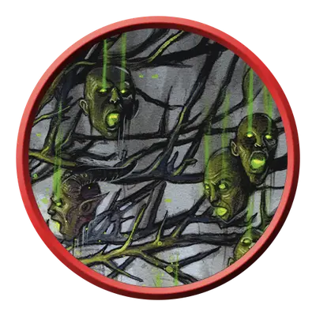

Древо мёртвых голов
Death’s Head Tree
Огромное Растение, Хаотичное Злое

Класс Защиты 15 Инициатива −1 (9)
Хиты 95 (10к12 + 30)
Скорость 20 футов
| мод | спас | ||
|---|---|---|---|
| СИЛ | 18 | +4 | +6 |
| ЛОВ | 8 | −1 | −1 |
| ТЕЛ | 16 | +3 | +3 |
| мод | спас | ||
|---|---|---|---|
| ИНТ | 5 | −3 | −3 |
| МДР | 10 | +0 | +0 |
| ХАР | 13 | +1 | +1 |
Иммунитеты Яд; Истощение, Отравленный
Чувства пассивное Восприятие 10, Слепое зрение 120 футов
Языки нет
Опасность 4 (1 100 опыта; БВ +2)
Особенности
Нависающая крона. Союзники дерева могут добровольно заканчивать перемещение в пространстве дерева. Союзники в пространстве дерева получают Укрытие наполовину.
Нечестивое прорастание. Если дерево не было убито существом, находящимся под действием заклинания Благословение, с использованием наносящего Рубящий урон оружия, спустя 365 дней после его смерти в том же месте прорастает 2к6 новых Древ мёртвых голов.
Действия
Мультиатака. Дерево совершает две атаки Размашистым ударом.
Размашистый удар. Бросок рукопашной атаки: +6, досягаемость 10 фт. Попадание: 15 (2к10 + 4) Дробящего урона.
Взрывная голова. Спасбросок Ловкости: Сл 14, все существа в 10-футовой Сфере с центром в точке, видимой деревом в пределах 120 футов. Провал: 10 (3к6) Некротического урона, и цель Отравлена до начала следующего хода дерева. Успех: Только половина урона.
Бонусные действия
Головы-плоды. Вся союзная Нежить в пространстве дерева может Реакцией немедленно получить 5 Временных хитов.
Бонус мастерства +2
Среда обитания Болота, Город, Леса
Сокровища Отсутствуют
Мёртвые головы
Летающие немёртвые головы
Мёртвые головы — это отделённые от тела летающие головы, оживлённые злой магией. Эти полные ненависти головы различаются по виду и степени разложения, а некоторые обладают сверхъестественными силами, связанными с теми существами, которыми они когда-то были. Совершите два броска по таблице «Облик мёртвой головы» для вдохновения или определите сами внешний вид мёртвой головы.
Облик мёртвой головы
| к10 | Голова принадлежит… | И выделяется… |
| 1 | Медведю | Налитыми кровью глазами |
| 2 | Обгоревшему трупу | Кровавой пеной на губах |
| 3 | Карге | Лишней парой глаз |
| 4 | Гуманоиду | Боевой раскраской на лице |
| 5 | Медузе | Железной маской |
| 6 | Свежевателю разума | Вытянутым языком |
| 7 | Нотику | Длинными волосами |
| 8 | Акуле | Заострёнными зубами |
| 9 | Волку | Деревянной челюстью |
| 10 | Лосю | Обнажённой костью |
Древа мёртвых голов — кощунственные растения, что взращивают мёртвые головы точно гнилые плоды. Они прорастают на проклятых землях, а их корни змеятся сквозь братские могилы, поля битв и места чудовищных трагедий.